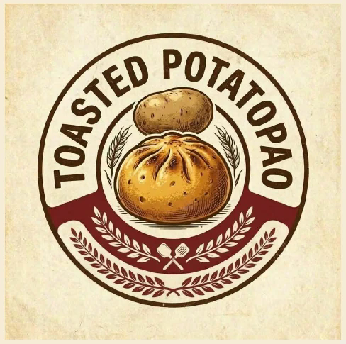
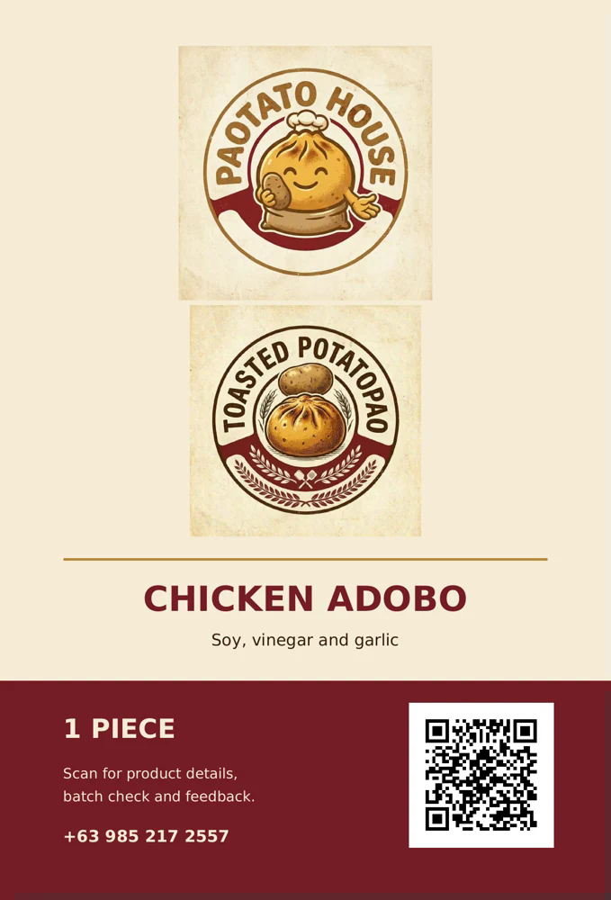

01 / SWEET & SAVORY
Chicken Asado
Sweet-savory chicken with a familiar asado-inspired sauce profile.
Meet Toasted PotatoPao: a golden toasted snack made with potato-enriched dough and your choice of three chicken fillings.

Each variety uses the same potato-enriched dough and a chicken filling. Product visuals show the label design.
Sweet-savory chicken with a familiar asado-inspired sauce profile.

Chicken flavored with soy sauce, vinegar, garlic and bay leaf.
Shredded chicken with ginger, garlic, turmeric and savory spices.
PaoTato House is a student-partnership business concept in Tanauan City. Toasted PotatoPao combines a familiar handheld format with potato-enriched dough and a toasted finish.
Planned operations are based in the Victory Mall area. Follow our social pages for updated availability, pickup arrangements and opening information.
Details for customers scanning our packaging QR code.
Prototype assembly uses 50 g dough plus 35 g cooked filling per piece before toasting. Finished net weight must be measured separately.
Formulas contain wheat (gluten), egg, milk, soy and oyster (shellfish). Ask the team before buying if you have an allergy.
Refer to the printed packed-on, lot and consume-by information on your actual package. Prototype artwork dates are illustrative and are not a verified shelf-life claim.
Nutrition figures on prototype labels were calculated from recipe quantities, not independently laboratory-tested.
Follow for product news and reach out for questions, pickup arrangements or feedback.